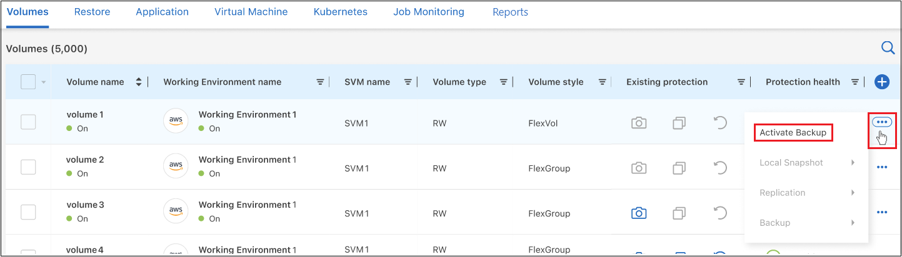
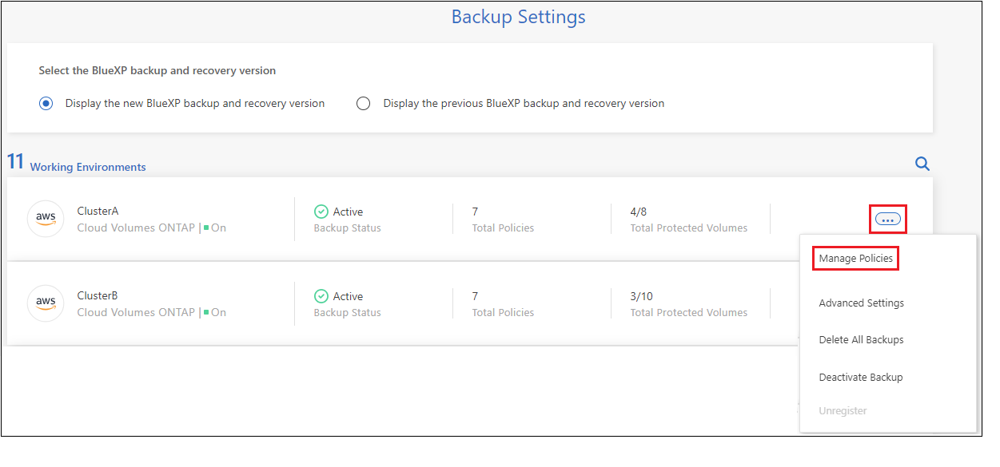
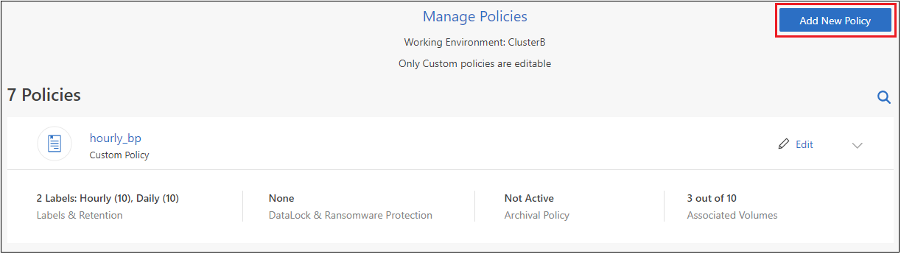
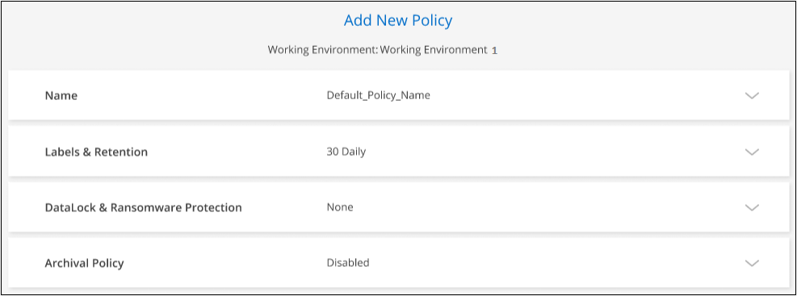
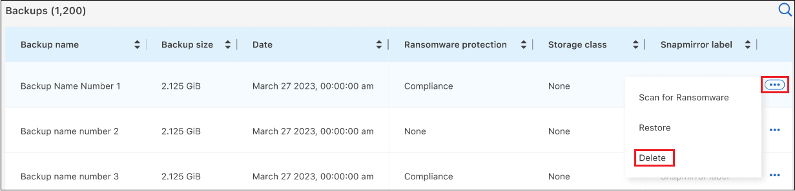

Versionshinweise
Versionshinweise
Verwalten Sie Backups für Ihre ONTAP Systeme
 Änderungen vorschlagen
Änderungen vorschlagen
Sie können Backups für Ihre Cloud Volumes ONTAP und On-Premises ONTAP Systeme managen, indem Sie den Backup-Zeitplan ändern, Volume-Backups aktivieren/deaktivieren, Backups anhalten, Backups löschen und vieles mehr. Dies umfasst alle Arten von Backups, einschließlich Snapshot Kopien, replizierte Volumes und Backup-Dateien im Objektspeicher.

|
Backup-Dateien dürfen nicht direkt auf Ihren Storage-Systemen oder in Ihrer Cloud-Provider-Umgebung gemanagt oder geändert werden. Dies kann die Dateien beschädigen und zu einer nicht unterstützten Konfiguration führen. |
Anzeigen des Backup-Status von Volumes in Ihren Arbeitsumgebungen
Sie können eine Liste aller Volumes anzeigen, die derzeit im Volume Backup Dashboard gesichert werden. Dies umfasst alle Arten von Backups, einschließlich Snapshot Kopien, replizierte Volumes und Backup-Dateien im Objektspeicher. Sie können auch die Volumes in den Arbeitsumgebungen anzeigen, die derzeit nicht gesichert werden.
-
Wählen Sie im Menü BlueXP die Option Schutz > Sicherung und Wiederherstellung.
-
Klicken Sie auf die Registerkarte Volumes, um die Liste der gesicherten Volumes für Ihre Cloud Volumes ONTAP- und On-Premises-ONTAP-Systeme anzuzeigen.

-
Wenn Sie nach bestimmten Volumes in bestimmten Arbeitsumgebungen suchen, können Sie die Liste nach Arbeitsumgebung und Volumen verfeinern. Sie können auch den Suchfilter verwenden oder die Spalten nach Volume-Stil (FlexVol oder FlexGroup), Volume-Typ und mehr sortieren.
Wählen Sie aus, um zusätzliche Spalten (Aggregate, Sicherheitsstil (Windows oder UNIX), Snapshot-Richtlinie, Replikationsrichtlinie und Backup-Richtlinie) anzuzeigen
 .
. -
Überprüfen Sie den Status der Schutzoptionen in der Spalte „bestehender Schutz“. Die 3 Symbole stehen für „Lokale Snapshot Kopien“, „replizierte Volumes“ und „Backups im Objektspeicher“.

Jedes Symbol ist blau, wenn dieser Sicherungstyp aktiviert ist, und es ist grau, wenn der Sicherungstyp inaktiv ist. Sie können den Mauszeiger über jedes Symbol bewegen, um die verwendete Backup-Richtlinie sowie weitere relevante Informationen für jeden Backup-Typ anzuzeigen.
Aktivieren Sie Backups auf zusätzlichen Volumes in einer funktionierenden Umgebung
Wenn Sie bei der ersten Aktivierung von BlueXP Backup und Recovery nur auf einigen Volumes in einer Arbeitsumgebung das Backup aktiviert haben, können Sie Backups auf weiteren Volumes später aktivieren.
-
Geben Sie auf der Registerkarte Volumes das Volume an, auf dem Sie Backups aktivieren möchten, und wählen Sie das Menü Aktionen aus
 Am Ende der Zeile, und wählen Sie Backup aktivieren.
Am Ende der Zeile, und wählen Sie Backup aktivieren.
-
Wählen Sie auf der Seite define Backup Strategy die Backup-Architektur aus, und definieren Sie dann die Richtlinien und andere Details für lokale Snapshot-Kopien, replizierte Volumes und Backup-Dateien. Weitere Informationen zu Backup-Optionen der ersten Volumes, die Sie in dieser Arbeitsumgebung aktiviert haben, finden Sie unter. Klicken Sie anschließend auf Weiter.
-
Überprüfen Sie die Backup-Einstellungen für dieses Volume, und klicken Sie dann auf Sicherung aktivieren.
Wenn Sie die Sicherung auf mehreren Volumes gleichzeitig mit identischen Backup-Einstellungen aktivieren möchten, finden Sie weitere Informationen unter Bearbeiten Sie die Backup-Einstellungen auf mehreren Volumes Entsprechende Details.
Ändern Sie die Backup-Einstellungen, die vorhandenen Volumes zugewiesen sind
Die Backup-Richtlinien, die Ihren vorhandenen Volumes mit zugewiesenen Richtlinien zugewiesen sind, können geändert werden. Sie können die Richtlinien für Ihre lokalen Snapshot-Kopien, replizierten Volumes und Backup-Dateien ändern. Alle neuen Snapshot-, Replizierungs- oder Backup-Richtlinien, die auf die Volumes angewendet werden sollen, müssen bereits vorhanden sein.
Bearbeiten Sie die Backup-Einstellungen auf einem einzelnen Volume
-
Geben Sie auf der Registerkarte Volumes das Volume an, das Sie Richtlinienänderungen vornehmen möchten, und wählen Sie das Menü Aktionen aus
Am Ende der Zeile, und wählen Sie Backup-Strategie bearbeiten.
-
Nehmen Sie auf der Seite Backup-Strategie bearbeiten Änderungen an den bestehenden Backup-Richtlinien für lokale Snapshot-Kopien, replizierte Volumes und Sicherungsdateien vor, und klicken Sie auf Weiter.
Wenn Sie bei der Aktivierung von BlueXP Backup und Recovery für diesen Cluster in der anfänglichen Backup-Richtlinie DataLock und Ransomware-Schutz für Cloud-Backups aktiviert haben, werden nur weitere Richtlinien angezeigt, die mit DataLock konfiguriert wurden. Und wenn Sie bei der Aktivierung von BlueXP Backup und Recovery DataLock und Ransomware-Schutz nicht aktiviert haben, werden Sie nur andere Cloud-Backup-Richtlinien sehen, für die DataLock nicht konfiguriert ist.
-
Überprüfen Sie die Backup-Einstellungen für dieses Volume, und klicken Sie dann auf Sicherung aktivieren.
Bearbeiten Sie die Backup-Einstellungen auf mehreren Volumes
Wenn Sie dieselben Backup-Einstellungen auf mehreren Volumes verwenden möchten, können Sie die Backup-Einstellungen auf mehreren Volumes gleichzeitig aktivieren oder bearbeiten. Sie können Volumes ohne Backup-Einstellungen, nur Snapshot-Einstellungen, nur Backups in Cloud-Einstellungen usw. auswählen und umfangreiche Änderungen über all diese Volumes mit unterschiedlichen Backup-Einstellungen vornehmen.
Bei der Arbeit mit mehreren Volumes müssen alle Volumes die folgenden gemeinsamen Merkmale aufweisen:
-
Gleiche Arbeitsumgebung
-
Gleicher Stil (FlexVol oder FlexGroup Volume)
-
Gleicher Typ (Lese-/Schreibzugriff oder Data Protection Volume)
-
Filtern Sie auf der Registerkarte Volumes nach der Arbeitsumgebung, in der sich die Volumes befinden.
-
Wählen Sie alle Volumes aus, auf denen Sie die Backup-Einstellungen verwalten möchten.
-
Je nach Art der zu konfigurierenden Sicherungsaktion klicken Sie im Menü Massenaktionen auf die Schaltfläche:

Sicherungsaktion… Klicken Sie auf diese Schaltfläche… Verwalten der Snapshot Backup-Einstellungen
Lokale Snapshots Verwalten
Managen der Replikationsbackup-Einstellungen
Replikation Verwalten
Managen der Backup-Einstellungen in der Cloud
Sicherung Verwalten
Verwalten Sie mehrere Arten von Backup-Einstellungen. Mit dieser Option können Sie auch die Backup-Architektur ändern.
Backup und Recovery verwalten
-
Nehmen Sie auf der daraufhin angezeigten Backup-Seite Änderungen an den bestehenden Backup-Richtlinien für lokale Snapshot-Kopien, replizierte Volumes oder Sicherungsdateien vor, und klicken Sie auf Speichern.
Wenn Sie bei der Aktivierung von BlueXP Backup und Recovery für diesen Cluster in der anfänglichen Backup-Richtlinie DataLock und Ransomware-Schutz für Cloud-Backups aktiviert haben, werden nur weitere Richtlinien angezeigt, die mit DataLock konfiguriert wurden. Und wenn Sie bei der Aktivierung von BlueXP Backup und Recovery DataLock und Ransomware-Schutz nicht aktiviert haben, werden Sie nur andere Cloud-Backup-Richtlinien sehen, für die DataLock nicht konfiguriert ist.
Erstellen Sie jederzeit eine manuelle Volume-Sicherung
Sie können jederzeit ein On-Demand-Backup erstellen, um den aktuellen Status des Volumes zu erfassen. Dies ist nützlich, wenn sehr wichtige Änderungen an einem Volume vorgenommen wurden und Sie nicht auf das nächste geplante Backup warten möchten, um diese Daten zu sichern. Sie können diese Funktion auch verwenden, um ein Backup für ein Volume zu erstellen, das derzeit nicht gesichert wird und den aktuellen Status erfassen soll.
Sie können eine Ad-hoc Snapshot Kopie oder ein Backup im Objekt eines Volume erstellen. Sie können kein ad-hoc repliziertes Volume erstellen.
Der Backup-Name enthält den Zeitstempel, sodass Sie Ihr On-Demand Backup aus anderen geplanten Backups identifizieren können.
Wenn Sie bei der Aktivierung von BlueXP Backup und Recovery für diesen Cluster DataLock und Ransomware-Schutz aktiviert haben, wird das On-Demand-Backup auch mit DataLock konfiguriert, und die Aufbewahrungsfrist beträgt 30 Tage. Ransomware-Scans werden für Ad-hoc-Backups nicht unterstützt. "Erfahren Sie mehr über DataLock und Ransomware-Schutz".
Beachten Sie, dass beim Erstellen eines Ad-hoc-Backups ein Snapshot auf dem Quell-Volume erstellt wird. Da dieser Snapshot nicht Teil eines normalen Snapshot-Zeitplans ist, wird er nicht rotiert. Nach Abschluss des Backups kann dieser Snapshot manuell vom Quell-Volume gelöscht werden. Dadurch werden Blöcke freigegeben, die mit diesem Snapshot verbunden sind. Der Name des Snapshots beginnt mit cbs-snapshot-adhoc-. "Informationen zum Löschen eines Snapshots mit der ONTAP-CLI finden Sie unter".

|
Volume-Backups werden auf Datensicherungs-Volumes nicht unterstützt. |
-
Klicken Sie auf der Registerkarte Volumes auf
 Wählen Sie für das Volume Backup > Ad-hoc-Backup erstellen.
Wählen Sie für das Volume Backup > Ad-hoc-Backup erstellen.
In der Spalte Backup Status für dieses Volume wird „in progress“ angezeigt, bis das Backup erstellt wird.
Sehen Sie sich die Liste der Backups für jedes Volume an
Sie können eine Liste aller Backup-Dateien anzeigen, die für jedes Volume vorhanden sind. Auf dieser Seite werden Details zum Quell-Volume, zum Zielort und zu Backup-Details wie zum Beispiel zum letzten Backup, zur aktuellen Backup-Richtlinie, zur Größe der Sicherungsdatei und mehr angezeigt.
-
Klicken Sie auf der Registerkarte Volumes auf
Wählen Sie für das Quellvolume View Volume Details.
Die Details für das Volume und die Liste der Snapshot Kopien werden standardmäßig angezeigt.

-
Wählen Sie Snapshot, Replication oder Backup, um die Liste aller Sicherungsdateien für jeden Sicherungstyp anzuzeigen.

Führen Sie einen Ransomware-Scan bei einem Volume-Backup im Objekt-Storage durch
Die NetApp Software zum Schutz vor Ransomware überprüft Ihre Backup-Dateien, um nach Anzeichen eines Ransomware-Angriffs zu suchen, wenn eine Backup-to-Object-Datei erstellt wird und Daten aus einer Backup-Datei wiederhergestellt werden. Darüber hinaus können Sie jederzeit einen On-Demand-Scan zum Schutz vor Ransomware durchführen, um die Benutzerfreundlichkeit einer bestimmten Backup-Datei im Objekt-Storage zu überprüfen. Die Folgen sind besonders dann hilfreich, wenn Ransomware-Probleme auf einem bestimmten Volume gehabt haben und man überprüfen möchte, ob die Backups für das Volume nicht betroffen sind.
Diese Funktion ist nur verfügbar, wenn die Volume-Sicherung auf einem System mit ONTAP 9.11.1 oder höher erstellt wurde, und wenn Sie DataLock und Ransomware-Schutz in der Backup-to-Object-Richtlinie aktiviert haben.
-
Klicken Sie auf der Registerkarte Volumes auf
Wählen Sie für das Quellvolume View Volume Details.Die Details für das Volume werden angezeigt.
-
Wählen Sie Backup, um die Liste der Sicherungsdateien im Objektspeicher anzuzeigen.

-
Klicken Sie Auf
Für das Volumen Backup-Datei, die Sie für Ransomware scannen möchten und klicken Sie auf Scan for Ransomware.
In der Spalte Ransomware Protection wird angezeigt, dass der Scan ausgeführt wird.
Verwalten der Replikationsbeziehung mit dem Quell-Volume
Nachdem Sie die Datenreplizierung zwischen zwei Systemen eingerichtet haben, können Sie die Datenreplikationsbeziehung verwalten.
-
Klicken Sie auf der Registerkarte Volumes auf
Wählen Sie für das Quell-Volume die Option Replikation. Sie können alle verfügbaren Optionen sehen. -
Wählen Sie die Replikationsaktion aus, die Sie durchführen möchten.

Die folgende Tabelle beschreibt die verfügbaren Aktionen:
Aktion Beschreibung Replikation Anzeigen
Zeigt Details zur Volume-Beziehung an: Übertragungsinformationen, Informationen zur letzten Übertragung, Details zum Volume und Informationen zur Schutzrichtlinie, die der Beziehung zugeordnet sind.
Replikation Aktualisieren
Startet eine inkrementelle Übertragung, um das Ziel-Volume zu aktualisieren, das mit dem Quell-Volume synchronisiert werden soll.
Replikation Anhalten
Unterbrechen Sie die inkrementelle Übertragung von Snapshot Kopien, um das Ziel-Volume zu aktualisieren. Wenn Sie die inkrementellen Aktualisierungen neu starten möchten, können Sie die Aktualisierung zu einem späteren Zeitpunkt fortsetzen.
Replikation Unterbrechen
Bricht die Beziehung zwischen den Quell- und Ziel-Volumes und aktiviert das Ziel-Volume für den Datenzugriff - macht es Lese-und Schreibzugriff.
Diese Option wird in der Regel verwendet, wenn das Quell-Volume aufgrund von Ereignissen wie Datenbeschädigung, versehentlichem Löschen oder einem Offline-Status keine Daten bereitstellen kann.
"Erfahren Sie, wie Sie ein Ziel-Volume für Datenzugriff konfigurieren und ein Quell-Volume in der ONTAP Dokumentation neu aktivieren"Replikation Abbrechen
Deaktiviert die Backups dieses Volumes auf dem Zielsystem und deaktiviert auch die Möglichkeit zur Wiederherstellung eines Volumes. Vorhandene Backups werden nicht gelöscht. Dadurch wird die Datensicherungsbeziehung zwischen den Quell- und Ziel-Volumes nicht gelöscht.
Reverse Resync
Kehrt die Rollen der Quell- und Ziel-Volumes um. Der Inhalt des ursprünglichen Quell-Volumes wird durch den Inhalt des Ziel-Volumes überschrieben. Dies ist hilfreich, wenn Sie ein Quell-Volume, das offline gegangen ist, reaktivieren möchten.
Alle Daten, die zwischen der letzten Datenreplizierung und dem Zeitpunkt, zu dem das Quell-Volume deaktiviert wurde, auf das ursprüngliche Quell-Volume geschrieben wurden, bleiben nicht erhalten.Beziehung Löschen
Löscht die Data-Protection-Beziehung zwischen Quell- und Ziel-Volumes, d. H., die Datenreplizierung findet nicht mehr zwischen den Volumes statt. Diese Aktion aktiviert nicht das Zielvolume für den Datenzugriff - das bedeutet, dass es nicht Lese- und Schreibvorgänge macht. Durch diese Aktion werden auch die Cluster-Peer-Beziehung und die SVM-Peer-Beziehung (Storage VM) gelöscht, falls keine anderen Datensicherungsbeziehungen zwischen den Systemen bestehen.
Nachdem Sie eine Aktion ausgewählt haben, aktualisiert BlueXP die Beziehung.
Vorhandene Richtlinie für das Backup in der Cloud bearbeiten
Sie können die Attribute für eine Backup-Richtlinie ändern, die derzeit auf Volumes in einer Arbeitsumgebung angewendet wird. Die Änderung der Backup-Richtlinie wirkt sich auf alle vorhandenen Volumes aus, die diese Richtlinie verwenden.
|
|
|
-
Wählen Sie auf der Registerkarte Volumes die Option Backup-Einstellungen aus.

-
Klicken Sie auf der Seite „ Backup Settings_“ auf
Wählen Sie für die Arbeitsumgebung, in der Sie die Richtlinieneinstellungen ändern möchten, und wählen Sie Richtlinien verwalten.
-
Klicken Sie auf der Seite Policies verwalten auf Bearbeiten für die Backup-Policy, die Sie in dieser Arbeitsumgebung ändern möchten.

-
Klicken Sie auf der Seite Edit Policy auf
 Erweitern Sie den Abschnitt Labels & Retention, um den Zeitplan und/oder die Backup-Aufbewahrung zu ändern, und klicken Sie auf Speichern.
Erweitern Sie den Abschnitt Labels & Retention, um den Zeitplan und/oder die Backup-Aufbewahrung zu ändern, und klicken Sie auf Speichern.
Wenn in Ihrem Cluster ONTAP 9.10.1 oder höher ausgeführt wird, haben Sie außerdem die Möglichkeit, das Tiering von Backups in Archiv-Storage nach einer bestimmten Anzahl von Tagen zu aktivieren oder zu deaktivieren.
"Erfahren Sie mehr über die Verwendung von Google Archivspeicher". (ONTAP 9.12.1 erforderlich.)
+
+ Beachten Sie, dass alle Backup-Dateien, die in einen Archiv-Storage verschoben wurden, in diesem Tier belassen werden, wenn Sie die Tiering-Backups zur Archivierung anhalten - sie werden nicht automatisch zurück in die Standard-Tier verschoben. Es werden nur neue Volume-Backups in der Standard-Tier gespeichert.
Neue Richtlinie für Backup in der Cloud hinzufügen
Wenn Sie BlueXP Backup und Recovery für eine funktionierende Umgebung aktivieren, werden alle Volumes, die Sie ursprünglich ausgewählt haben, mithilfe der von Ihnen definierten Standard-Backup-Richtlinie gesichert. Um bestimmten Volumes mit verschiedenen Recovery Point Objectives (RPOs) unterschiedliche Backup-Richtlinien zuzuweisen, können Sie zusätzliche Richtlinien für diesen Cluster erstellen und diese Richtlinien anderen Volumes zuweisen.
Wenn Sie eine neue Sicherungsrichtlinie auf bestimmte Volumes in einer Arbeitsumgebung anwenden möchten, müssen Sie zunächst die Sicherungsrichtlinie zur Arbeitsumgebung hinzufügen. Dann können Sie das Wenden Sie die Richtlinie auf Volumes in dieser Arbeitsumgebung an.
|
|
|
-
Wählen Sie auf der Registerkarte Volumes die Option Backup-Einstellungen aus.
-
Klicken Sie auf der Seite „ Backup Settings_“ auf
Wählen Sie für die Arbeitsumgebung, in der Sie die neue Richtlinie hinzufügen möchten, und wählen Sie Richtlinien verwalten. -
Klicken Sie auf der Seite Policies verwalten auf Neue Richtlinie hinzufügen.

-
Klicken Sie auf der Seite „ Neue Richtlinie hinzufügen_“ auf
Erweitern Sie den Abschnitt Labels & Retention, um den Zeitplan und die Backup-Aufbewahrung zu definieren, und klicken Sie auf Speichern.
Wenn in Ihrem Cluster ONTAP 9.10.1 oder höher ausgeführt wird, haben Sie außerdem die Möglichkeit, das Tiering von Backups in Archiv-Storage nach einer bestimmten Anzahl von Tagen zu aktivieren oder zu deaktivieren.
"Erfahren Sie mehr über die Verwendung von Google Archivspeicher". (ONTAP 9.12.1 erforderlich.)
+
Backups löschen
Mit BlueXP Backup und Recovery können Sie eine einzelne Backup-Datei löschen, alle Backups eines Volumes löschen oder alle Backups aller Volumes in einer funktionierenden Umgebung löschen. Sie möchten eventuell alle Backups löschen, wenn Sie die Backups nicht mehr benötigen, oder wenn Sie das Quell-Volume gelöscht haben und alle Backups entfernen möchten.
Beachten Sie, dass Sie keine Sicherungsdateien löschen können, die Sie mit DataLock und Ransomware-Schutz gesperrt haben. Die Option „Löschen“ ist in der Benutzeroberfläche nicht verfügbar, wenn Sie eine oder mehrere gesperrte Sicherungsdateien ausgewählt haben.
|
|
Wenn Sie planen, eine Arbeitsumgebung oder ein Cluster mit Backups zu löschen, müssen Sie die Backups *löschen, bevor Sie das System löschen. BlueXP Backup und Recovery löscht Backups nicht automatisch, wenn Sie ein System löschen. Die Benutzeroberfläche bietet derzeit keine Unterstützung zum Löschen der Backups nach dem Löschen des Systems. Für alle verbleibenden Backups werden weiterhin die Kosten für Objekt-Storage in Rechnung gestellt. |
Löschen Sie alle Sicherungsdateien für eine funktionierende Umgebung
Durch das Löschen aller Backups auf dem Objektspeicher für eine Arbeitsumgebung werden zukünftige Backups von Volumes in dieser Arbeitsumgebung nicht deaktiviert. Wenn Sie die Erstellung von Backups aller Volumes in einer Arbeitsumgebung beenden möchten, können Sie Backups deaktivieren Wie hier beschrieben.
Beachten Sie, dass diese Aktion keine Auswirkungen auf Snapshot-Kopien oder replizierte Volumes hat. Diese Arten von Backup-Dateien werden nicht gelöscht.
-
Wählen Sie auf der Registerkarte Volumes die Option Backup-Einstellungen aus.
-
Klicken Sie Auf
Für die Arbeitsumgebung, in der Sie alle Backups löschen und Alle Backups löschen auswählen möchten.
-
Geben Sie im Bestätigungsdialogfeld den Namen der Arbeitsumgebung ein und klicken Sie auf Löschen.
Eine einzelne Sicherungsdatei für ein Volume löschen
Sie können eine einzelne Sicherungsdatei löschen, wenn Sie sie nicht mehr benötigen. Dazu gehört auch das Löschen eines einzelnen Backups einer Volume-Snapshot-Kopie oder eines Backups im Objektspeicher.
Replizierte Volumes (Data Protection Volumes) können nicht gelöscht werden.
-
Klicken Sie auf der Registerkarte Volumes auf
Wählen Sie für das Quellvolume View Volume Details.Die Details für das Volume werden angezeigt, und Sie können Snapshot, Replication oder Backup auswählen, um die Liste aller Sicherungsdateien für das Volume anzuzeigen. Standardmäßig werden die verfügbaren Snapshot Kopien angezeigt.
-
Wählen Sie Snapshot oder Backup, um den Typ der zu löschenden Sicherungsdateien anzuzeigen.
-
Klicken Sie Auf
Für die Sicherungsdatei des Datenträgers, die Sie löschen möchten, klicken Sie auf Löschen. Der Screenshot unten stammt von einer Backup-Datei im Objektspeicher.
-
Klicken Sie im Bestätigungsdialogfeld auf Löschen.
Löschen von Volume-Backup-Beziehungen
Wenn Sie die Backup-Beziehung für ein Volume löschen, erhalten Sie einen Archivierungsmechanismus, wenn Sie die Erstellung neuer Backup-Dateien beenden und das Quell-Volume löschen möchten, aber alle bestehenden Backup-Dateien behalten möchten. So können Sie das Volume bei Bedarf später aus der Backup-Datei wiederherstellen und gleichzeitig Speicherplatz aus dem Quell-Storage-System löschen.
Das Quell-Volume muss nicht unbedingt gelöscht werden. Sie können die Backup-Beziehung für ein Volume löschen und das Quell-Volume behalten. In diesem Fall können Sie die Backups auf dem Volume zu einem späteren Zeitpunkt „aktivieren“. Die ursprüngliche Backup-Kopie des Basisplans wird in diesem Fall weiterhin verwendet. Eine neue Basis-Backup-Kopie wird nicht erstellt und in die Cloud exportiert. Beachten Sie, dass beim Reaktivieren einer Backup-Beziehung dem Volume die standardmäßige Backup-Richtlinie zugewiesen wird.
Diese Funktion ist nur verfügbar, wenn Ihr System ONTAP 9.12.1 oder höher ausführt.
Das Quell-Volume kann nicht von der BlueXP Backup- und Recovery-Benutzeroberfläche gelöscht werden. Sie können jedoch die Seite Volume Details auf dem Bildschirm öffnen, und "Löschen Sie das Volume von dort".
|
|
Sie können einzelne Sicherungsdateien des Volumes nicht löschen, sobald die Beziehung gelöscht wurde. Sie können es jedoch "Löschen Sie alle Backups für das Volume" Wenn Sie alle Sicherungsdateien entfernen möchten. |
-
Klicken Sie auf der Registerkarte Volumes auf
Wählen Sie für das Quellvolume Backup > Beziehung löschen.
BlueXP Backup und Recovery für eine funktionierende Umgebung deaktivieren
Durch die Deaktivierung von BlueXP Backup- und Recovery-Funktionen für eine funktionierende Umgebung werden die Backups jedes Volumes auf dem System deaktiviert. Zudem wird die Möglichkeit zur Wiederherstellung eines Volumes deaktiviert. Vorhandene Backups werden nicht gelöscht. Dadurch wird die Registrierung des Backup-Service in dieser Arbeitsumgebung nicht aufgehoben. Im Grunde können Sie alle Backup- und Wiederherstellungsaktivitäten für einen bestimmten Zeitraum anhalten.
Beachten Sie, dass Cloud-Provider Ihnen weiterhin die Kosten für Objekt-Storage für die Kapazität in Ihrem Backup in Rechnung stellen, es sei denn, Sie sind erforderlich Löschen Sie die Backups.
-
Wählen Sie auf der Registerkarte Volumes die Option Backup-Einstellungen aus.
-
Klicken Sie auf der Seite „ Backup Settings “ auf
Für die Arbeitsumgebung, in der Sie Backups deaktivieren und Sicherung deaktivieren auswählen möchten.
-
Klicken Sie im Bestätigungsdialogfeld auf Deaktivieren.
|
|
Für diese Arbeitsumgebung wird während der Sicherung eine Sicherung aktivieren-Schaltfläche angezeigt. Sie können auf diese Schaltfläche klicken, wenn Sie die Backup-Funktion in dieser Arbeitsumgebung erneut aktivieren möchten. |
Heben Sie die Registrierung von BlueXP Backup und Recovery für eine funktionierende Umgebung auf
Wenn Sie die Backup-Funktionen nicht mehr nutzen möchten und Sie die Kosten für Backups in dieser Arbeitsumgebung abschaffen möchten, können Sie die Registrierung für das BlueXP Backup und Recovery für eine Arbeitsumgebung aufheben. Diese Funktion wird normalerweise verwendet, wenn Sie planen, eine Arbeitsumgebung zu löschen, und Sie möchten den Backup-Service abbrechen.
Sie können diese Funktion auch verwenden, wenn Sie den Zielobjektspeicher ändern möchten, in dem Ihre Cluster-Backups gespeichert werden. Nachdem Sie BlueXP Backup und Recovery für die Arbeitsumgebung entfernt haben, können Sie BlueXP Backup und Recovery für dieses Cluster mithilfe der Informationen des neuen Cloud-Providers aktivieren.
Bevor Sie das Backup- und Recovery-System von BlueXP aufheben können, müssen Sie in der folgenden Reihenfolge vorgehen:
-
BlueXP Backup und Recovery für die Arbeitsumgebung deaktivieren
-
Löschen Sie alle Backups für die Arbeitsumgebung
Die Option zum Aufheben der Registrierung ist erst verfügbar, wenn diese beiden Aktionen abgeschlossen sind.
-
Wählen Sie auf der Registerkarte Volumes die Option Backup-Einstellungen aus.
-
Klicken Sie auf der Seite „ Backup Settings “ auf
Für die Arbeitsumgebung, in der Sie die Registrierung des Backup-Dienstes aufheben möchten, und wählen Sie Registrierung aufheben aus.
-
Klicken Sie im Bestätigungsdialogfeld auf Registrierung aufheben.